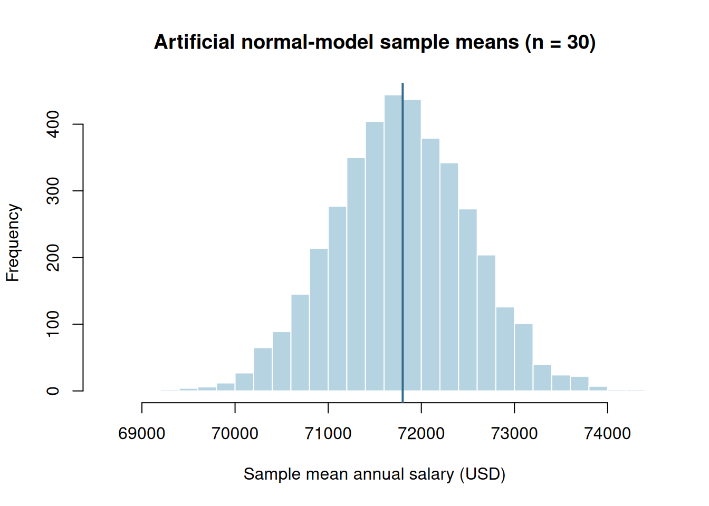

Module 4: Sampling Distributions and Standard Errors
Lesson 2 | Individuals versus statistics
Learning objectives and reading
Calculate and interpret standard errors for a mean and a proportion, explain the central limit theorem, and recognize when finite population correction matters. Read §§7.5–7.6, especially printed pp.322–324.
Business case: repeated EAI samples
Return to the textbook’s 2,500 EAI employees, whose annual salaries have mean $71,800 and population SD $4,000; 60% completed management training. Compare repeated simple random samples of 30 employees. How variable are sample mean salary and sample training proportion? These are stated population summaries, not verified individual records.
نعود إلى مجتمع 2,500 موظف لدى EAI في الكتاب، حيث متوسط الراتب السنوي 71,800 دولار والانحراف المعياري للمجتمع 4,000 دولار، وقد أكمل 60% التدريب الإداري. نقارن عينات عشوائية بسيطة متكررة، حجم كل منها 30 موظفًا. ما مقدار تباين متوسط الراتب ونسبة إكمال التدريب بين العينات؟ هذه ملخصات المجتمع المعطاة، وليست سجلات فردية جرى التحقق منها.
Three different distributions
The population distribution describes individual salaries; a sample distribution describes the observed salaries in one sample; the sampling distribution describes one statistic over repeated samples. Their horizontal axes may share units, but their spreads answer different questions.
For independent, identically distributed observations with finite variance:
The population SD describes variability of individual values. The standard error is the SD of an estimator’s sampling distribution. When \(\sigma\) is unknown, \(s/\sqrt n\) estimates the SE; it does not become a known population quantity.
For independent binary observations with common probability \(p\):
For simple random sampling without replacement from a finite population of size \(N\), multiply these SEs by \(\sqrt{(N-n)/(N-1)}\) when population variance uses denominator \(N\). Without-replacement observations are dependent. The textbook neglects this correction when \(n/N\leq .05\); this is an approximation, not exact independence.
# kable(): formats a data frame or matrix as a readable report table; digits sets displayed precision.# data.frame(): builds a table whose named columns have compatible lengths.# c(): combines values into a vector, converting them to a common type when needed.# Compare the book's large-population approximation with the finite-population SE.# sqrt() takes a square root; the correction uses N-1 because population variance uses denominator N.N <-2500n <-30fpc <-sqrt((N - n)/(N -1))knitr::kable(data.frame(Statistic =c("Mean salary (USD/year)", "Training proportion"),Approximate_SE =c(4000/sqrt(n), sqrt(.6*.4/n)),Corrected_SE = fpc *c(4000/sqrt(n), sqrt(.6*.4/n))), digits =5)
Statistic
Approximate_SE
Corrected_SE
Mean salary (USD/year)
730.29674
726.04696
Training proportion
0.08944
0.08892
The uncorrected salary SE is about $730.30, much smaller than the $4,000 individual SD. Multiplying sample size by four halves the uncorrected SE. Bias is not in this formula; smaller SE does not establish accuracy under a faulty design.
Shape and the central limit theorem
For independent normal observations, the sample mean is exactly normal for any \(n\). For many nonnormal populations with finite variance and appropriate independence, the central limit theorem makes the mean approximately normal as \(n\) grows. It does not make the raw observations normal. There is no universal sample size of 30 that handles arbitrary skewness, outliers, or dependence.
For a proportion, assess expected success and failure counts before a normal approximation. We use \(np\geq10\) and \(n(1-p)\geq10\) as a cautious teaching rule; this is a guideline, not a proof. Use estimated counts when constructing an interval with unknown \(p\).
An explicitly artificial illustration
The next simulation uses independent normal salaries with EAI’s stated mean and SD. It is an original model illustration: no claim is made that the finite EAI salary population is normal or that these are its actual employees. We deliberately omit finite population correction because this simulation draws from an independent model.
# mean(): computes an average; logical TRUE/FALSE values contribute 1/0, giving a proportion.# c(): combines values into a vector, converting them to a common type when needed.# sd(): computes sample standard deviation using denominator n-1.# sqrt(): returns the nonnegative square root of a nonnegative number.# replicate(B, expression) repeats a calculation B times; each result here is a new sample mean.# rnorm(n, mean, sd) draws n artificial normal values using SD, not variance; set.seed() fixes the draw sequence.set.seed(307312)means <-replicate(4000, mean(rnorm(30, mean =71800, sd =4000)))c(simulated_mean =mean(means), simulated_SE =sd(means), model_SE =4000/sqrt(30))
# hist() displays the simulated sample means; breaks=30 requests roughly 30 histogram classes.# abline(v=...) adds a vertical reference at the model's population mean.hist(means, breaks =30, col ="#B6D3E1", border ="white",main ="Artificial normal-model sample means (n = 30)", xlab ="Sample mean annual salary (USD)")abline(v =71800, col ="#356B8C", lwd =2)

Original R simulation from a stated normal model; bars represent sample means, not individual employees.
Interpret a probability
Under that normal model, the chance a sample mean of 30 lies within $500 of $71,800 is:
# sqrt(): returns the nonnegative square root of a nonnegative number.# pnorm() returns a normal lower-tail probability; subtract the two CDF values for an interval.# sd receives the SE of a mean, not the $4,000 SD of individual salaries.se <-4000/sqrt(30)pnorm(72300, mean =71800, sd = se) -pnorm(71300, mean =71800, sd = se)
[1] 0.5064372
This is a probability about a future sample mean under the model. It is not a probability that one employee earns within $500 of the mean.
Sources and limits
Anderson et al. (2020), §§7.5–7.6; EAI parameters p.308, finite correction and SE p.323, normality and CLT p.324. Formula use is conditional on the sampling design. Normal simulated salaries are course-generated model values, not reconstructed book data.